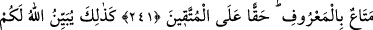

233. Emzirmeyi tamamlatmak isteyen (baba) için, anneler çocuklarını iki tam yıl
emzirirler. Onların örfe uygun olarak beslenmesi ve giyimi baba tarafına âittir. Bir
insan ancak gücü yettiğinden sorumlu tutulur. Hiçbir anne, çocuğu sebebiyle, hiçbir
baba da çocuğu yüzünden zarara uğratılmamalıdır. Onun benzeri (nafaka temini)
vâris üzerine de gerekir. Eğer ana ve baba birbiriyle görüşerek ve karşılıklı
anlaşarak çocuğu memeden kesmek isterlerse, kendilerine günah yoktur.
Çocuklarınızı (süt anne tutup) emzirtmek istediğiniz takdirde, süt anneye
vermekte olduğunuzu iyilikle teslim etmeniz şartıyla, üzerinize günah yoktur.
Allah’dan korkun. Bilin ki Allah, yapmakta olduklarınızı görür.
234. Sizden ölenlerin, geride bıraktıkları eşleri, kendi başlarına (evlenmeden)
dört ay on gün beklerler. Bekleme müddetlerini bitirdikleri vakit, kendileri
hakkında yaptıkları meşrû işlerde size bir günah yoktur. Allah yapmakta
olduklarınızı bilir.
235. (İddet beklemekte olan) kadınlarla evlenme husûsundaki düşüncelerinizi
üstü kapalı biçimde anlatmanızda veya onu içinizde gizli tutmanızda size günah
yoktur. Allah bilir ki siz onları anacaksınız. Lâkin, meşrû sözler söylemeniz
müstesna, sakın onlara gizlice buluşma sözü vermeyin. Farz olan bekleme müddeti
dolmadan, nikâh kıymaya kalkışmayın. Bilin ki Allah, gönlünüzdekileri bilir. Bu
sebeple Allah’dan sakının. Şunu iyi bilin ki Allah gafûrdur, halîmdir.
236. Nikâhtan sonra henüz dokunmadan veya onlar için belli bir mehir tayin
etmeden kadınları boşarsanız bunda size mehir zorunluğu yoktur. Bu durumda
onlara müt’a (hediye cinsinden bir şeyler) verin. Zengin olan durumuna göre, fakir
de durumuna göre vermelidir. Münasib bir müt’a vermek iyiler için bir borçtur.
237. Kendilerine mehir tayin ederek evlendiğiniz kadınları, temâs etmeden
boşarsanız, tayin ettiğiniz mehrin yarısı onların hakkıdır. Ancak kadınların
vazgeçmesi veya nikâh bağı elinde bulunanın (velinin) vazgeçmesi hali müstesna,
affetmeniz (mehirden vazgeçmeniz), takvâya daha uygundur. Aranızda iyilik ve
ihsânı unutmayın. Şüphesiz Allah yapmakta olduklarınızı hakkıyla görür.
238. Namazlara ve orta namaza devam edin. Allah’a saygı ve bağlılık içinde
namaz kılın.